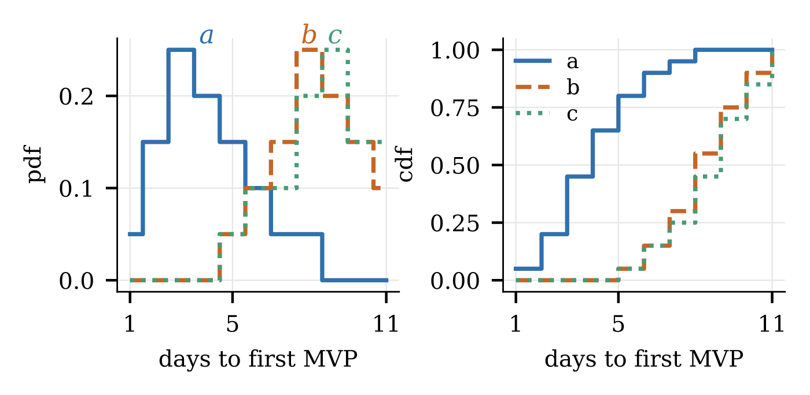
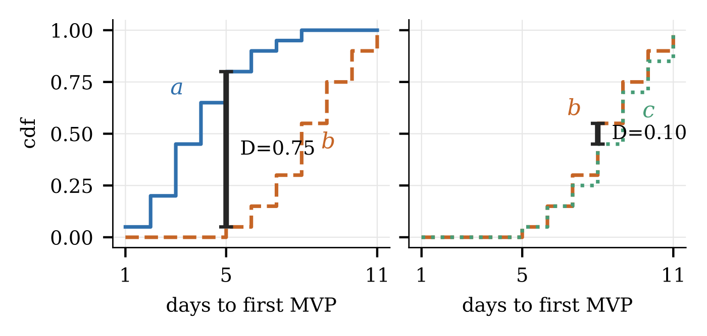

Numbers carry their arithmetic; claims wait for their statistics.
References. LLMs fabricate citations — fluent, plausible, non-existent, at double-digit rates for some models. Two standing instructions keep the human check cheap:
Statistics. The paper ships a ranking-statistics tutorial as an appendix, since the field has measurably gotten data analysis wrong for decades. The short form: argue with distributions, not single runs; a difference must pass two gates — significance (e.g. Kolmogorov–Smirnov) and effect size — before it earns the word “better”; ranking many treatments needs its own procedure, not pairwise p-hacking. Not every researcher is a statistician; standard AI assistance here can raise typical quality.

Argue with distributions, not single runs: three treatments as pdf (left) and cdf (right).

The Kolmogorov–Smirnov gate: a vs b differ (D=0.75); b vs c do not (D=0.10). Only differences that pass significance and effect size earn the word “better”.
The whole kit is five functions, stdlib only, every pass linear on pre-sorted data. The gate: two treatments are the same unless significance (KS) and both effect sizes (Cliff's δ, Cohen's d) all vote different.
def same(xs, ys,
c0=.35, # cohen threshold (Cohen'88)
d0=.195, # cliffs threshold (Romano'06)
k0=1.36, # ks threshold (Massey'51)
is_sorted=True):
if not is_sorted:
xs, ys = sorted(xs), sorted(ys)
return (cohen(xs, ys) <= c0 and
cliffs(xs, ys) <= d0 and
ks(xs, ys) <= k0)
Significance: KS walks both sorted lists one distinct value at a time; the statistic is the largest vertical gap between the two cdfs, rescaled to critical units (under 1.36 = insignificant at the usual 5% false-alarm rate).
def ks(xs, ys):
nx, ny = len(xs), len(ys)
d = p = q = 0
while p < nx and q < ny:
v = min(xs[p], ys[q])
while p < nx and xs[p] == v: p += 1
while q < ny and ys[q] == v: q += 1
d = max(d, abs(p/nx - q/ny))
return d / ((nx+ny) / (nx*ny)) ** 0.5
Effect size, non-parametric: Cliff's δ asks how often x beats y minus how often y beats x. Naively quadratic; sorting first makes it linear.
def cliffs(xs, ys):
gt = lt = j = k = 0
for x in xs:
while j < len(ys) and ys[j] < x:
j += 1; k = j
while k < len(ys) and ys[k] == x:
k += 1
gt += j; lt += len(ys) - k
return abs(gt - lt) / (len(xs)*len(ys))
Effect size, pragmatic: Cohen's d catches differences that are real but dull — smaller than anyone cares about. No imports needed: on sorted data the 10th-to-90th percentile gap spans 2.56 standard deviations, so one subtraction estimates the deviation.
TINY = 1e-32
def mean(a):
return sum(a) / len(a)
def stdev(a):
n = len(a) // 10
return (a[9*n] - a[n]) / 2.56
def cohen(xs, ys):
n, m = len(xs), len(ys)
sd = (((n-1)*stdev(xs)**2 +
(m-1)*stdev(ys)**2)
/ (n+m-2)) ** 0.5
return abs(mean(xs)-mean(ys)) / (sd+TINY)
Many treatments: no pairwise p-hacking. Sort by medians, sweep once
best-to-worst; each treatment joins the current rank while
same holds, else opens a new rank. Rank zero holds the
winners.
def ranks(d, big=False):
mid = lambda t: t[len(t) // 2]
dd = {k: sorted(v)
for k, v in d.items()}
out, win = {}, []
rank, best = -1, None
for k in sorted(dd,
key=lambda k: mid(dd[k]),
reverse=big):
if best is None or \
not same(dd[best], dd[k]):
rank, best = rank + 1, k
if rank == 0: win.append(k)
out[k] = rank
return win, out
Full tutorial with the worked example: the paper's
Appendix B. Regenerate figures: make statsfig.
Conclusions with receipts. The conclusion retells the introduction, now with the headline numbers from the charts, each claim attached to the result that earned it. Every threat-to-validity leaf ends with a mitigation or an accepted cost — a threat without a response reads as an unfixed bug. Instrument tables (agreement rates, thresholds, download rates) live in threats, since they argue instrument validity.
And ship the package. The loop's exit condition includes a replication package — in the paper's own Reviewer-2 test run, that was the one strong point the hostile critic conceded.
Combines with: 3 — read above the knee (report the download rate); 6 — assemble critics (verifiability criterion); 4 — write to a grammar (the conclusion and threats productions enforce this).